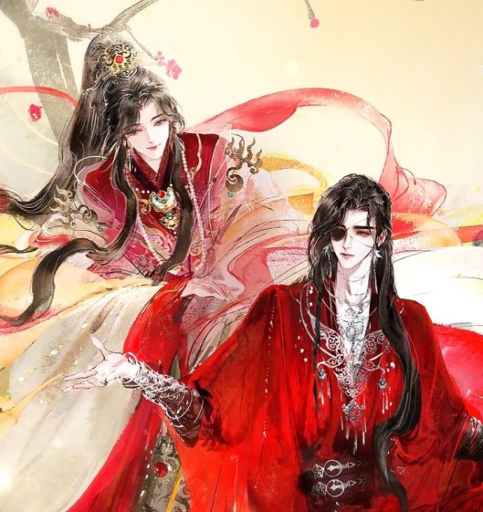
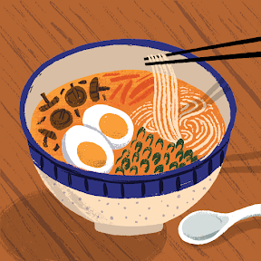

I love physics and astronomy! My favorite color is blue. My favorite food is soupy noodles because they taste awesome! I love reading danmei, playing chess, writing fanfic, listening to music, travelling, and having silly conversations. My favorite TV series is The Untamed and my favorite movie is Crazy Rich Asians because it's so goofy!
 